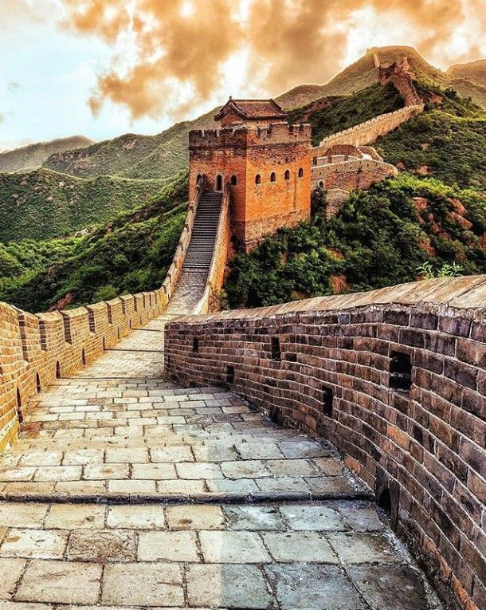
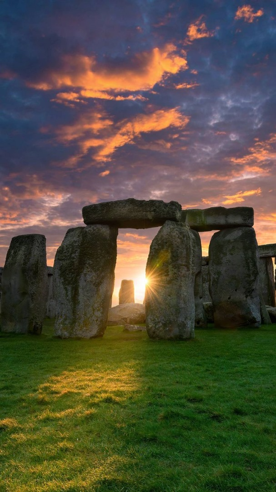
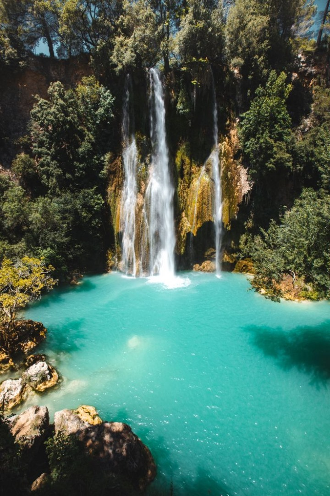

Destinations à découvrir
-

La grande muraille de Chine
La Grande Muraille de Chine est une merveille d'architecture qui serpente à travers des paysages époustouflants. Imaginez marcher sur ses pavés anciens, entouré de montagnes majestueuses, tout en découvrant des tours de guet offrant des vues imprenables. Chaque pas résonne avec l'histoire des empereurs et des soldats. Un lieu magique qui promet des souvenirs inoubliables !

la Grande Barrière de Corail
La Grande Barrière de Corail, située au large de la côte du Queensland, en Australie, est un véritable trésor sous-marin. Plongez dans ses eaux cristallines pour explorer des récifs coralliens éclatants, où des poissons tropicaux dansent parmi les coraux. Que vous soyez plongeur expérimenté ou amateur de snorkeling, chaque instant passé ici est une aventure inoubliable. Laissez-vous émerveiller par la diversité marine et la beauté naturelle de ce site classé au patrimoine mondial de l'UNESCO. Un voyage à la Grande Barrière de Corail promet des souvenirs enchanteurs et une connexion unique avec la nature !
Stonehenge
Stonehenge, situé sur la plaine de Salisbury en Angleterre, est un mystère préhistorique qui fascine depuis des siècles. Ce monument emblématique, composé de gigantesques pierres agencées avec précision, suscite l'émerveillement et l'interrogation. Imaginez-vous déambulant parmi ces structures anciennes, ressentant l'énergie de l'histoire et des rituels qui s'y sont déroulés. Au lever du soleil, la magie opère, illuminant les pierres dans une lumière dorée. Que vous soyez passionné d'archéologie ou simplement en quête d'un lieu chargé de mystère, Stonehenge est une expérience inoubliable qui vous connecte à nos ancêtres et à leur savoir-faire.
Dindefelo
Dindéfélo, situé au cœur du Sénégal, est un véritable bijou naturel et culturel. Ce village pittoresque, entouré de paysages verdoyants et de montagnes majestueuses, offre une immersion dans la vie traditionnelle sénégalaise. Découvrez ses cascades impressionnantes, comme celles de Dindéfélo, où l'eau cristalline cascade dans un cadre idyllique. Partez à la rencontre des habitants chaleureux et découvrez leurs coutumes et leur artisanat. Que vous soyez amateur de randonnée ou passionné de culture, Dindéfélo vous promet une expérience authentique et inoubliable au cœur de la nature.
Parc de Kruger
Le Parc national Kruger, en Afrique du Sud, est un véritable sanctuaire de la faune sauvage. S'étendant sur près de 20 000 kilomètres carrés, ce parc offre une aventure inégalée pour les amoureux de la nature. Imaginez-vous parcourant ses vastes savanes, à la recherche des Big Five : lions, éléphants, léopards, buffles et rhinocéros. Les safaris vous permettent d'observer ces majestueux animaux dans leur habitat naturel, tout en admirant des paysages variés, des rivières aux collines. Que vous choisissiez un safari en voiture ou à pied, chaque moment passé dans le parc est une occasion de créer des souvenirs inoubliables. Le Parc national Kruger est un incontournable pour quiconque souhaite découvrir la beauté et la richesse de la faune africaine.